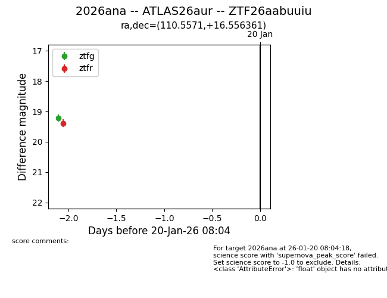
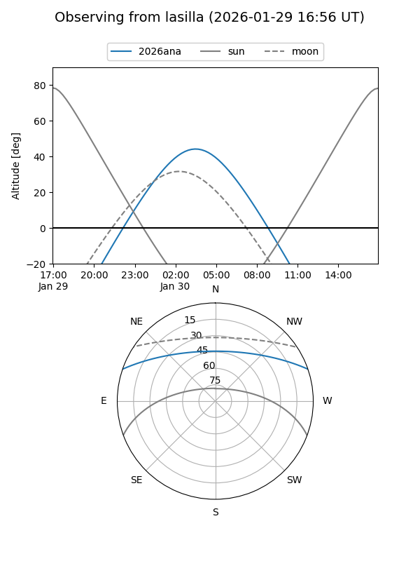
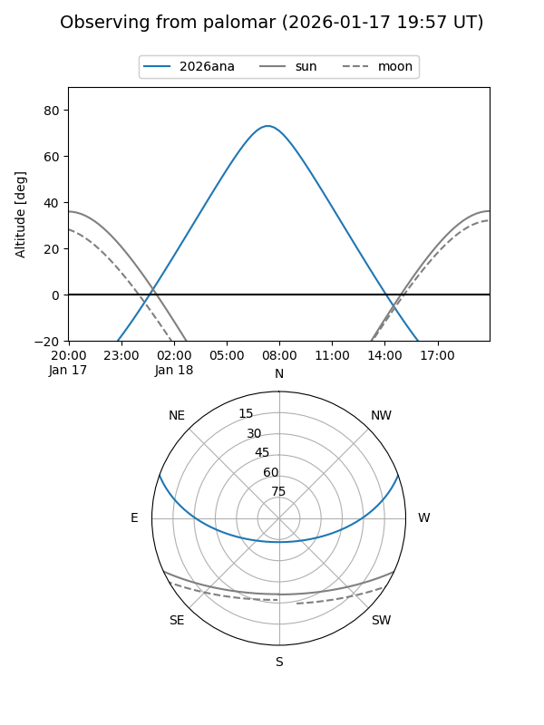
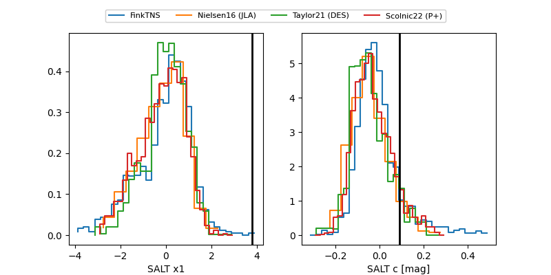

2026ana
Target 2026ana at 2026-01-26 14:31
Aliases and brokers:
FINK: link
Lasair: link
ALeRCE: link
TNS: link
YSE: link
alt names
ZTF26aabuuiu (ztf,fink_ztf)
2026ana (tns,yse)
ATLAS26aur (atlas)
Coordinates:
equatorial (ra, dec) = 110.5571,+16.55636
equatorial (HMS+DMS) = 07:22:13.70,+16:33:22.90
galactic (l, b) = (201.3274,+14.13476)
Flags:
Photometry:
last ztfg=19.22, ztfr=19.20
3 ztfg, 2 ztfr detections
Lightcurve

Visibility


Additional plots
